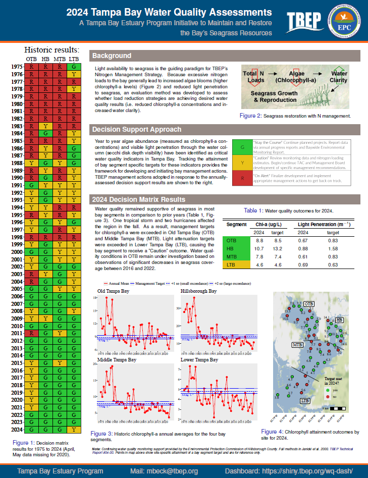
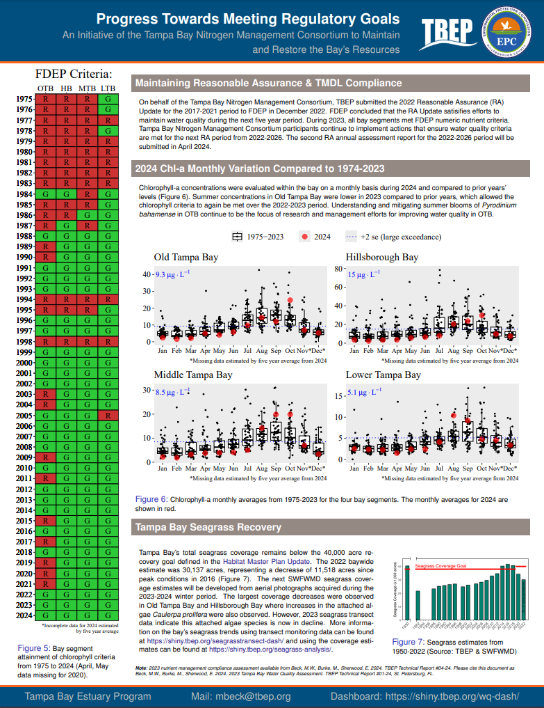
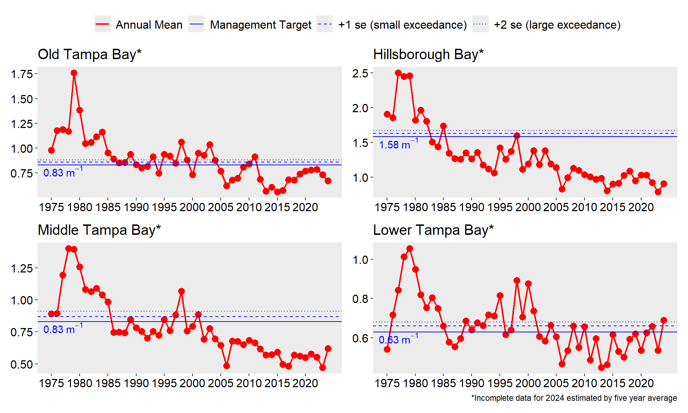
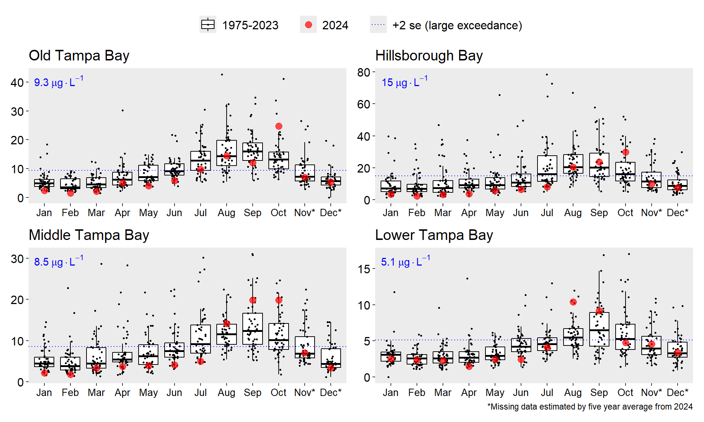
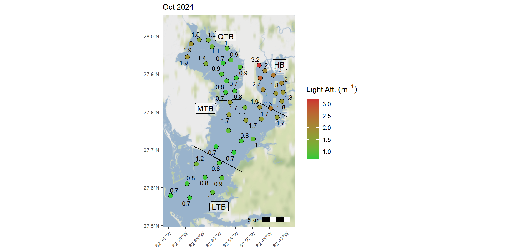
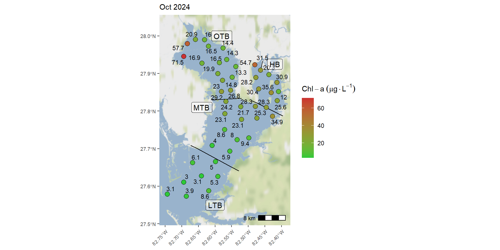
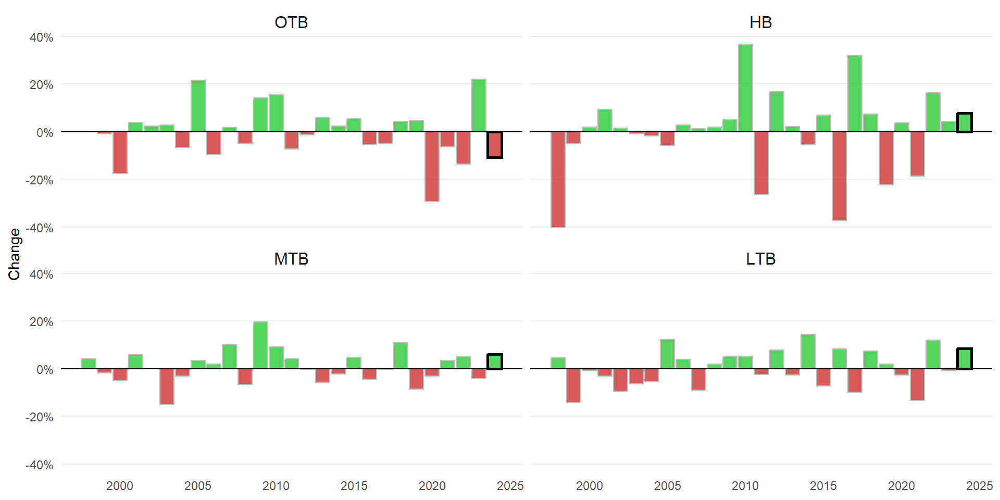

2024 PROVISIONAL WATER QUALITY REPORT CARD
Dr. Marcus Beck, mbeck@tbep.org
Tampa Bay Estuary Program
Dec 18, 2024
RA FRAMEWORK
- Each year, assess attainment of water quality thresholds
- Annual reporting to FDEP, second year of 2022-2026 RA period
- Today’s results include data through October

WATER QUALITY REPORT CARD
https://tbep-tech.github.io/wq-static/wq.pdf


REGULATORY THRESHOLDS
- Each bay segment evaluated by chlorophyll-a threshold
OTB: 9.3 μg/L, HB: 15.0 μg/L, MTB: 8.5 μg/L, LTB: 5.1 μg/L
MANAGEMENT ACTIONS
- Each bay segment assigned a management action, based on chlorophyll and light attenuation magnitude and duration

REGULATORY OUTCOMES
* 2024 Nov - Dec based on average from five years prior
MANAGEMENT OUTCOMES
* 2024 Nov - Dec based on average from five years prior
OLD TAMPA BAY DETAILS
CHLOROPHYLL TRENDS
SEASONAL TRENDS
STATION TARGET ATTAINMENT
STATION OCTOBER CHLOROPHYLL
SEAGRASS TRANSECT DATA
EVALUATING SSOs
- FDEP maintains Public Notice of Pollution database
- Reports indicate location, date, contact, and narrative description
- Details in narrative description…
EVALUATING SSOs
- An example of a spill volume description:
[1] "on saturday november 16 2024 at approximately 1:30 pm staff at the northwest regional water reclamation facility located at 10890 s mobley road in tampa discovered foam billowing from the #3 activated sludge digester. this incident continued off and on until approximately 7:30 am monday november 18 2024. the cause of the release was due to a faulty tank level indicator. this incident released approximately 19000 gallons of digested activated sludge and foam onto the ground. staff was able to stop the overflow by shutting air off to the effected tank and isolating the feed sludge. most of this release was contained on site. however during the cleanup approximately 200 gallons of the release was inadvertently pushed onto adjacent property and into a storm water pond. this stormwater pond is not connected to surface waters of the state. so far approximately 7500 gallons of the release has been vacuumed up and returned to the facility for processing. cleanup efforts are continuing and the effected area will be disinfected with lime.\r\n\r\nregulatory agencies were notified.\r\n"EVALUATING SSOs
flowchart LR
A[Raw Description Column] --> B{Contains Numeric\nCharacters?}
B -->|No| C[Remove Record]
B -->|Yes| D{Check Pattern Types}
D -->|None Found| C
D --> E1{Has 'spill volume:'?}
D --> E2{Has 'gallon'?}
D --> E3{Has 'mg'?}
E1 -->|Yes| F1[Extract number after\n'spill volume:' or\n'spill volume: estimated']
E2 -->|Yes AND\nNo spill volume| F2[Extract all numbers\nbefore 'gallon']
E3 -->|Yes AND\nNo gallon AND\nNo spill volume| F3[Extract numbers\nbefore 'mg'\nExclude 'mg/l']
F2 --> G2[Take maximum if\nmultiple values]
F3 --> G3[Take maximum if\nmultiple values\nMultiply by 1e6]
F1 --> H[Final Volume Value]
G2 --> H
G3 --> H
H --> I{Is Value NA?}
I -->|Yes| C
I -->|No| J[Keep Record]
SSOs 2017 to present
SSOs 2024 by month
CONCLUSIONS
- All segments provisionally (through October) meet regulatory thresholds, all segments green for management targets except LTB
- Continued seagrass loss in OTB
- SSOs in 2024 likely contributed to poor water quality in October, among other things
- Third year of 2022 - 2026 RA period

Tampa Bay Nitrogen Management Consortium